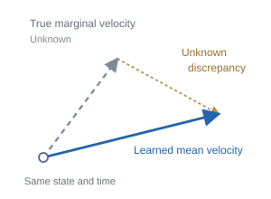
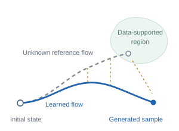
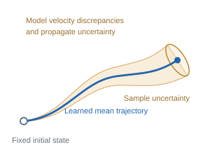
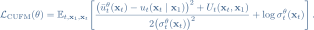
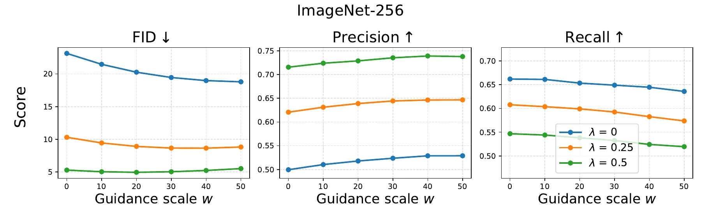
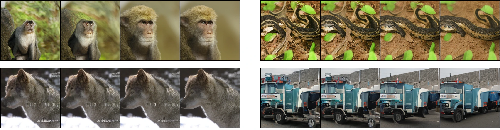
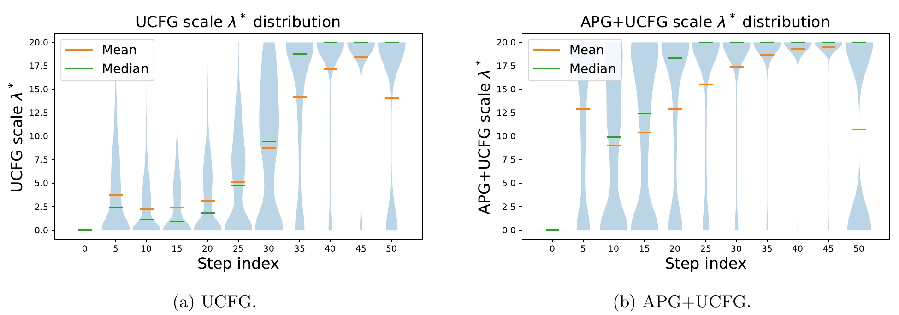
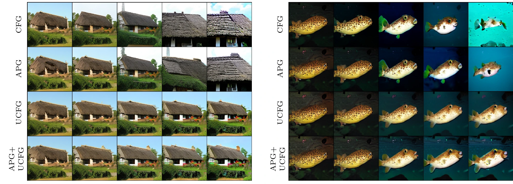

UG
Steer toward lower uncertainty

UNCERTAINTY-AWARE FLOW MATCHING
Massachusetts Institute of Technology
Despite the remarkable success of sampling-based generative models such as flow matching, they can still produce samples of inconsistent or degraded quality. To assess sample reliability and improve sample fidelity, we propose uncertainty-aware flow matching (UA-Flow), a lightweight extension of flow matching that predicts the velocity field together with heteroscedastic uncertainty. UA-Flow estimates spatially localized sample uncertainty by propagating velocity uncertainty through the flow dynamics. The resulting estimates serve as reliability signals that reflect data-manifold support for each generated sample or region. We further use them to steer generation via uncertainty-aware guidance (UG) and uncertainty-aware classifier-free guidance (UCFG). Experiments on ImageNet and CIFAR-10 show that UA-Flow’s uncertainty tracks sample fidelity more consistently than element-wise baselines and that these signals also carry information about data-manifold support. On ImageNet, UG increases precision at the cost of recall and improves FID, while UCFG maintains lower FID than CFG at large guidance scales.
In practice, various factors such as finite training data, limited model capacity, and optimization error introduce local errors in the learned velocity field. As these errors accumulate along the ODE trajectory, they can divert generated samples away from regions supported by the data distribution. If the true marginal velocity were known, we could measure its discrepancy from the learned mean velocity at each state and time, and assess how the effects of these discrepancies accumulate along the flow. However, the true marginal velocity is intractable. UA-Flow therefore models these velocity discrepancies probabilistically and propagates the resulting uncertainty through the flow dynamics to quantify sample-level uncertainty.

The true marginal velocity is unavailable, so the local error cannot be measured directly.

Local errors affect subsequent states and can move the generated sample away from data support.

UA-Flow models velocity discrepancies probabilistically and propagates their uncertainty.
UA-Flow predicts a velocity mean and heteroscedastic variance.
A lightweight variance head predicts heteroscedastic velocity uncertainty. Propagating it through deterministic flow dynamics yields a spatial uncertainty map for each generated sample.
Velocity mean and variance

Track the mean and its uncertainty together

An image and a spatial reliability signal

Sample 

Uncertainty 
Brighter regions = higher uncertainty
 follows deterministic flow dynamics; velocity uncertainty is propagated into the state variance
follows deterministic flow dynamics; velocity uncertainty is propagated into the state variance  . Trajectory and uncertainty ellipses are schematic. Images are actual ImageNet-256 outputs.
. Trajectory and uncertainty ellipses are schematic. Images are actual ImageNet-256 outputs.UA-Flow adds a lightweight variance head to the velocity network. At each state and time, the network predicts a velocity mean and an element-wise variance, defining a Gaussian velocity model:
The predicted variance represents local velocity uncertainty. To train this model, we sample a data endpoint and an intermediate state along the flow-matching probability path. Since the true marginal velocity is unavailable, we use the known endpoint-conditioned target velocity in a corrected Gaussian negative log-likelihood:

The squared residual trains the velocity mean, while the variance sets the residual’s weight and is regularized by the log term. The correction accounts for the difference between conditional and marginal velocity targets:
Here, is a mini-batch estimate of the marginal velocity, formed by averaging conditional velocities with weights proportional to their conditional path densities. The correction yields an approximate training objective for the marginal velocity discrepancy.
For each generated sample, we draw and then fix an initial state. We initialize the mean at that state and set , so the propagated uncertainty reflects velocity uncertainty for this fixed starting point. The mean follows the learned flow:

Alongside the mean, we update the element-wise state variance using an Euler approximation:

The squared standard-deviation term adds local velocity uncertainty. The state–velocity covariance term captures how existing state uncertainty interacts with the local sensitivity of the learned velocity field. UA-Flow approximates this covariance using a first-order linearization and Hutchinson’s diagonal estimator, computed with Jacobian-vector products.
At the endpoint, is the generated sample and is its spatial uncertainty map. Keeping the map localizes uncertain regions; aggregating it gives a scalar score for ranking and filtering samples.
Use the predicted velocity uncertainty at the current state to modify sampling. UG steers the trajectory; UCFG adapts the strength of classifier-free guidance.

UG uses the predicted velocity variance at the current mean state to steer sampling toward lower-uncertainty regions. We define a scalar objective that increases as velocity variance decreases. Taking the gradient of this objective with respect to the current state gives a correction to the velocity mean:

The scale  controls the strength of the correction, and
controls the strength of the correction, and  is determined by the flow-matching probability path.
is determined by the flow-matching probability path.
UCFG adapts classifier-free guidance using the conditional and unconditional velocity predictions from the same network. Let and denote their element-wise standard deviations, evaluated at the current mean state. Under a strong-correlation approximation between these velocity predictions, the variance of the extrapolated velocity is:
For each sample, we choose one nonnegative scale that minimizes the sum of these coordinate-wise variances, then cap it at  :
:
The resulting adaptive scale replaces the fixed CFG scale in the guided mean velocity:

Combining UG and UCFG. At each step, UCFG first sets the guided velocity mean and its approximate variance. UG then differentiates the uncertainty objective using that guided variance and adds its correction to the guided mean.
We present ImageNet-256 results here. Results for ImageNet-128 and CIFAR-10 are in the main manuscript
We generate 100,000 ImageNet-256 images without guidance, rank them by uncertainty, and remove the most uncertain 10%–50%. At each filtering ratio, metrics use 50,000 randomly selected retained images and 50,000 reference images. For element-wise uncertainty maps, the score is the mean of the highest-uncertainty 10% of elements; GenUnc and UA-Flow + CLIP instead use CLIP-space scores.

On ImageNet-256, UA-Flow achieves lower FID and higher precision after filtering than AU and BayesDiff. Increasing the filtering ratio raises precision while reducing recall.
Uncertainty maps from UA-Flow, AU (De Vita & Belagiannis, 2025), and BayesDiff (Kou et al., 2024).


Scroll horizontally to compare the three datasets.
Using the same CLIP-space aggregation as GenUnc, UA-Flow + CLIP recovers a comparable precision–recall tradeoff, with lower FID on ImageNet-256. Its sampling and uncertainty-quantification cost is approximately 3.5 times lower than GenUnc on this dataset.
To test what uncertainty represents, we measure its Spearman rank correlation with distance to the data manifold and rarity. We define distance to the data manifold as the feature-space distance from a generated sample to its third-nearest real reference sample (i.e., the nearest-neighbor distance with k = 3). Larger distances indicate weaker local support from the reference data. The rarity score (Han et al., 2023) measures how atypical a generated sample is relative to the real data.
At the sample level, we compare the CLIP-space scores of UA-Flow + CLIP and GenUnc. At the patch level, we compare spatial uncertainty from UA-Flow, AU, and BayesDiff.
| Metric | Sample-wise | Patch-wise | |||
|---|---|---|---|---|---|
| GenUnc | UA-Flow + CLIP | AU | BayesDiff | UA-Flow | |
| Distance to manifold | 0.4190 | 0.4426 | −0.4719 | 0.1820 | 0.5404 |
| Rarity | 0.3995 | 0.4165 | −0.4154 | 0.1422 | 0.4771 |
ImageNet-256 uses 2 × 2 latent-space patches. Rarity is evaluated only for samples and patches classified as inside the data manifold. Bold values mark the strongest correlation within each comparison level.
On ImageNet-256, UA-Flow has the strongest patch-wise correlation with both metrics, and UA-Flow + CLIP has the strongest sample-wise correlation. These positive correlations associate higher uncertainty with greater distance from the data manifold and higher rarity.
We evaluate uncertainty as a control signal in two settings: UG changes the sampling trajectory under a fixed CFG scale, and UCFG adapts the classifier-free guidance scale at each sampling step.
We sweep the UG strength from 0 to 50 under fixed CFG scales of 0, 0.25, and 0.5. These CFG + UG experiments keep the CFG scale fixed to isolate UG. Increasing UG generally raises precision and lowers recall. At nonzero CFG scales, FID reaches a minimum at an intermediate UG strength and then increases.


 from left to right. UG trades diversity for fidelity as guidance strength increases.
from left to right. UG trades diversity for fidelity as guidance strength increases.On ImageNet-256, UG lowers FID across these fixed-CFG settings. Qualitatively, stronger UG produces more class-consistent samples with less complex backgrounds, consistent with the measured fidelity–diversity tradeoff.
We compare fixed CFG and adaptive projected guidance (APG) with UCFG and APG + UCFG. Fixed CFG and APG use a fixed guidance scale; UCFG variants instead use a cap on the scale selected from predicted uncertainty at every step. At large fixed scales, recall falls sharply and CFG’s precision also declines. UCFG variants degrade more gradually as their guidance cap increases.

 for CFG/APG, or the adaptive-scale cap for UCFG variants.
for CFG/APG, or the adaptive-scale cap for UCFG variants.| Method | ImageNet-256 FID ↓ |
|---|---|
| CFG | 4.48 ± 0.01 |
| UCFG | 4.30 ± 0.01 |
| APG | 4.18 ± 0.01 |
| APG + UCFG | 3.98 ± 0.07 |
Each method uses its own lowest-FID guidance setting; values are the mean ± standard deviation over three seeds.
On ImageNet-256, UCFG improves the best FID over fixed CFG, while retaining higher recall at those settings. APG + UCFG gives the lowest FID among the compared guidance variants.
How adaptive scales limit over-guidance. UCFG treats the maximum guidance scale as an upper bound. At every sampling step, it selects a scale for each sample by minimizing the approximate variance of the extrapolated velocity. This lets it choose a smaller correction when stronger extrapolation would increase predicted uncertainty.

The distributions show that UCFG-based methods vary guidance across samples and sampling steps. Their tendency to use smaller scales early suggests that adaptive scaling limits over-guidance while the sample is still coarse, which may help explain the smaller loss of recall at large guidance caps. In the qualitative comparison below, UCFG and APG + UCFG preserve global structure with less saturation under large caps, while large fixed scales in CFG and APG produce oversaturation or mode collapse.

or adaptive-scale cap over 1, 2, 5, 10, and 20 from left to right. Compared with CFG and APG at large fixed scales, UCFG and APG + UCFG preserve structure more robustly under large guidance caps.INTERACTIVE GUIDANCE SWEEP
Compare the saved samples and latent uncertainty maps across both guidance scales.
Guidance settings
UG steers toward lower predicted uncertainty. UCFG adapts the classifier-free guidance scale, bounded by λmax.
Guinea pig · UG 30 · Maximum UCFG 2
Viewer of precomputed ImageNet-256 experiments; each example uses a fixed initial noise seed.
Uncertainty is shown in latent space. These maps visualize predicted uncertainty, not measured image error.
Results and figures follow the local manuscript; see the paper for experimental details.
@article{han2026uaflow,
title = {Flow Matching with Uncertainty Quantification and Guidance},
author = {Juyeop Han and Lukas Lao Beyer and Sertac Karaman},
journal = {arXiv preprint arXiv:2602.10326},
year = {2026}
}